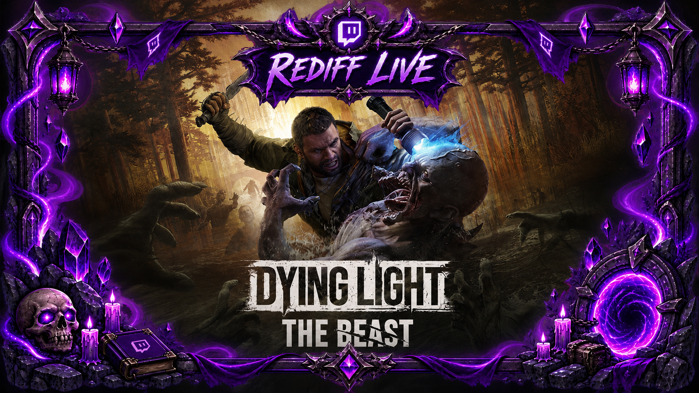
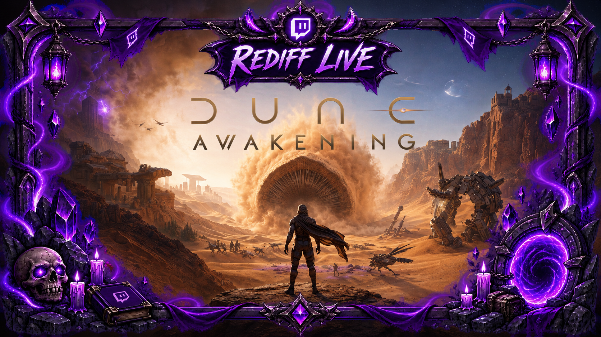

🔴
Lives bruts
Retour aux ArchivesRetrouvez les rediffusions complètes des aventures de la Guilde.

Dying Light : The Beast
Retrouvez les rediffusions des lives de la Guilde à Castor Woods, entre survie, infectés et terreur nocturne.
🟢 Playlist en cours Voir la playlist
Dune : Awakening
Revivez les sessions de la Guilde sur Arrakis, entre exploration du désert, construction et survie face aux dangers de la planète.
🔒 Pas encore disponible Voir la playlist